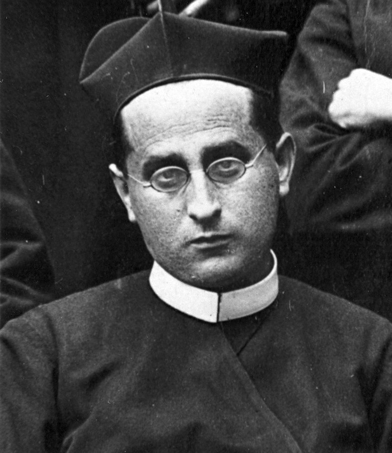

En el acta de 1936 su nombre no aparece. Donde debía ir, el juez de Fuencarral escribió: «un hombre sin identificar».
Donato Jiménez Bibiano
Sacerdote y misionero redentorista. Mártir.
Nació en Alaejos, en la Tierra de Medina, y fue misionero durante más de treinta años por pueblos de Castilla, Navarra y Galicia. En septiembre de 1936 lo detuvieron en Madrid por ser religioso, lo encerraron en la checa de la calle Fomento y, cinco días después, lo mataron en la carretera de Francia. Lo enterraron sin nombre. Setenta años más tarde, los datos del acta y la fotografía grapada a ella permitieron devolvérselo. Desde 2022 la Iglesia lo venera como beato.
- Nacimiento
- 21 mar 1873Alaejos, Valladolid
- Martirio
- 18 sep 1936Carretera de Francia, km 12 (Fuencarral, Madrid)
- Beatificación
- 22 oct 2022Catedral de la Almudena, Madrid
Quién fue
Es uno de los doce redentoristas de Madrid beatificados el 22 de octubre de 2022: el grupo encabezado por el padre Vicente Renuncio Toribio, seis sacerdotes y seis hermanos de las comunidades del Perpetuo Socorro y de San Miguel. Donato pertenecía a la comunidad de San Miguel, en el barrio madrileño de La Latina, adonde había llegado aquel mismo verano.
Lo que sabemos de él lo sabemos sobre todo por tres escritos: el relato de su vida que él mismo redactó en el noviciado, en 1893; la carta que su amigo de infancia y paisano, el padre Saturnino Martín Lucas, escribió en 1944; y los testimonios de quienes compartieron con él la celda número 5 de la checa de Fomento.
Este sitio reúne lo que esas fuentes permiten afirmar. Cuando aparece una frase entre comillas, es una cita de un documento identificado; al margen de cada página, y en el apartado de fuentes, se indica de dónde procede.
- Congregación
- Santísimo Redentor (C.Ss.R.)
- Profesión
- 8 de septiembre de 1893
- Ordenación
- 27 de mayo de 1899, Astorga
- Comunidad en 1936
- San Miguel Arcángel, Madrid
- Memoria litúrgica
- 6 de noviembre

Para siempre seré vuestro y hasta la muerte os quedaré fiel.
El recorrido
Seis apartados. Se pueden leer en orden o por separado.
- ISu vidaEl niño travieso de Alaejos, la misión que lo cambió todo, la noche a caballo hasta Nava del Rey y más de treinta años de misionero y superior.
- IIEl martirioDos meses escondido, la detención en la calle Mayor, la celda número 5 de la checa de Fomento y la madrugada del 18 de septiembre de 1936.
- IIICronologíaSesenta y tres años de vida y lo que vino después, en veinticinco fechas. Cada una con su fuente.
- IVLos doceNo murió solo. Los doce redentoristas mártires de Madrid y su beatificación en la Almudena en 2022.
- VMemoriaNo tiene sepultura conocida. Dónde se le recuerda, quiénes guardaron su memoria y la galería de fotografías.
- VIFuentes y oraciónLos documentos originales de la causa, la bibliografía y la oración para pedir su intercesión.